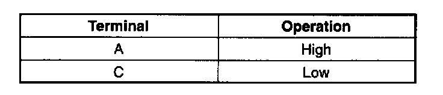
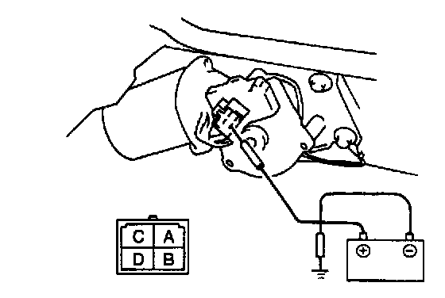
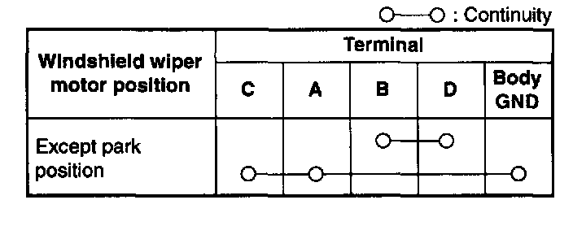
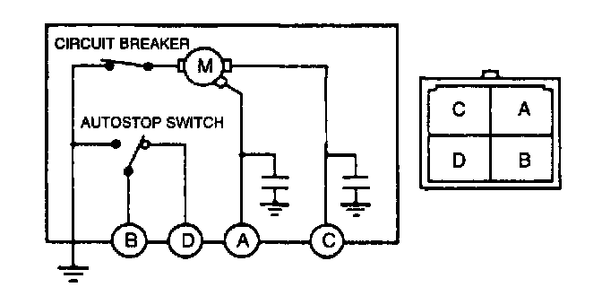
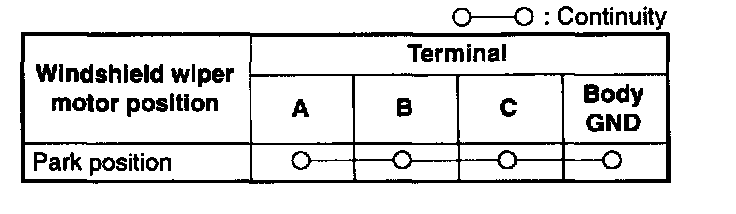
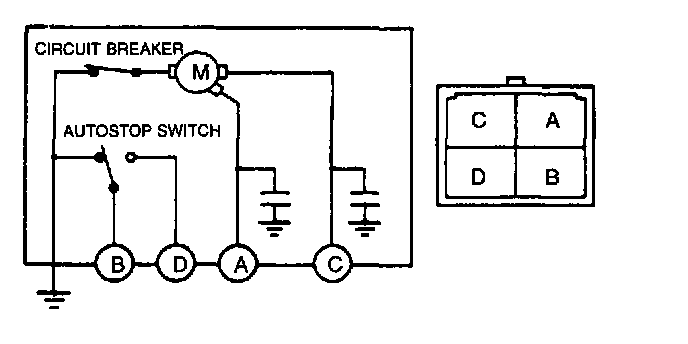

Wiper Motor: Testing and Inspection
WINDSHIELD WIPER MOTOR INSPECTION1. Disconnect the windshield wiper motor connector.


2. Apply battery positive voltage and inspect the operation of the windshield wiper motor as indicated.
3. Connect the windshield wiper motor connector.
4. Turn the ignition switch to ON and turn the windshield wiper switch on.
5. Turn the ignition switch to LOCK while the windshield wipers are operating.
6. Verity that the windshield wipers do not stop in the park position.
7. Disconnect the windshield wiper motor connector.


8. Inspect for continuity between the windshield wiper motor terminals by using an ohmmeter.
9. Connect the windshield wiper motor connector.
10. Turn the ignition switch to ON and turn the windshield wiper switch on.
11. Turn the windshield wiper switch off while the windshield wipers are operating.
12. Verity that the windshield wipers stop in the park position.
13. Disconnect the windshield wiper motor connector.


14. Inspect for continuity between the windshield wiper motor terminals by using an ohmmeter.
15. If not as specified, replace the windshield wiper motor.